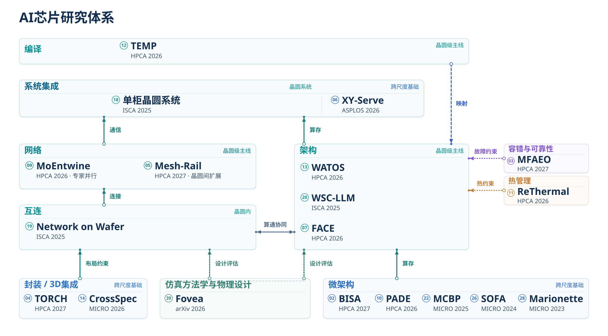

01
大模型训练与推理
如何组织并行计算与调度？
围绕训练与推理中的并行策略、调度、专家负载均衡和资源管理展开研究。
WSC-LLM · WATOS · MoEntwine · FACE · XY-Serve
研究方向
连接并行执行、编译映射与硬件组织，研究算力、存储和通信如何共同支撑大模型训练与推理。
围绕晶圆级计算，贯通计算架构、通信组织、编译映射、物理集成与设计方法学。

01
如何组织并行计算与调度？
围绕训练与推理中的并行策略、调度、专家负载均衡和资源管理展开研究。
WSC-LLM · WATOS · MoEntwine · FACE · XY-Serve
02
如何映射工作负载并评估设计？
研究张量分区、编译映射、拓扑协同设计与设计空间探索。
TEMP · Network on Wafer · WindMill
03
如何组织计算、存储与通信资源？
研究晶圆级体系结构、空间计算、高效注意力计算与面向存储的加速器设计。
Wafer-scale architecture · ReThermal · SOFA · Marionette
并行策略提出映射需求，映射结果揭示硬件资源需求；硬件容量、带宽和运行成本又约束系统设计。各论文围绕不同问题展开，有各自独立的验证。